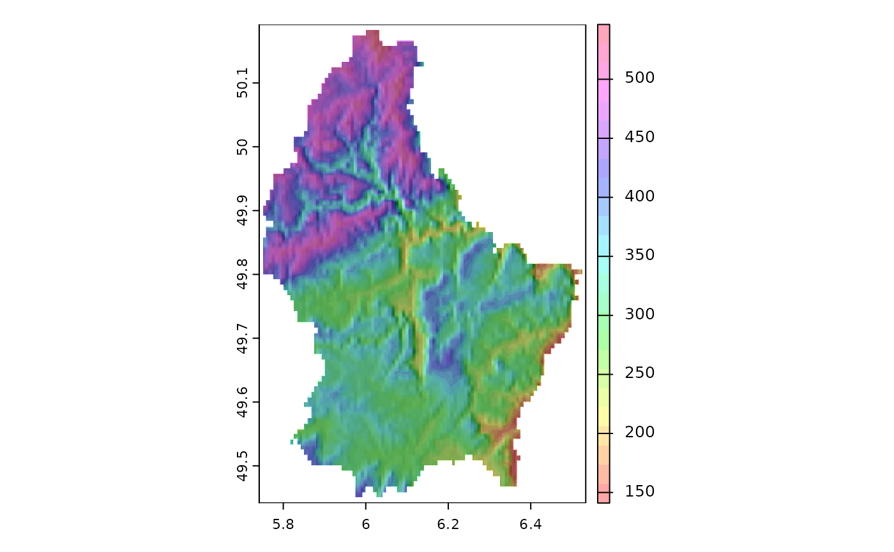

Hill shading
shade.RdCompute hill-shade from slope and aspect layers (both in radians). Slope and aspect can be computed with function terrain.
A hill-shade layer is often used as a backdrop on top of which another, semi-transparent, layer is drawn.
Usage
shade(slope, aspect, angle=45, direction=0, normalize=FALSE,
filename="", overwrite=FALSE, ...)Arguments
- slope
SpatRasterwith slope values (in radians)
- aspect
SpatRaster with aspect values (in radians)
- angle
The elevation angle(s) of the light source (sun), in degrees
- direction
The direction (azimuth) angle(s) of the light source (sun), in degrees
- normalize
Logical. If
TRUE, values below zero are set to zero and the results are multiplied with 255- filename
character. Output filename
- overwrite
logical. If
TRUE,filenameis overwritten- ...
additional arguments for writing files as in
writeRaster
References
Horn, B.K.P., 1981. Hill shading and the reflectance map. Proceedings of the IEEE 69(1):14-47
Examples
f <- system.file("ex/elev.tif", package="terra")
r <- rast(f)
# disaggregating because the resolution of this raster is a bit low
# you generally should not do that with your own data
r <- disagg(r, 10, method="bilinear")
slope <- terrain(r, "slope", unit="radians")
aspect <- terrain(r, "aspect", unit="radians")
hill <- shade(slope, aspect, 40, 270)
plot(hill, col=grey(0:100/100), legend=FALSE, mar=c(2,2,1,4))
plot(r, col=rainbow(25, alpha=0.35), add=TRUE)

# A better hill shade may be achieved by combining
# different angles and directions. For example
hh <- shade(slope, aspect, angle = c(45, 45, 45, 80), direction = c(225, 270, 315, 135))
h1 <- Reduce(mean, hh)
h2 <- mean(hh)